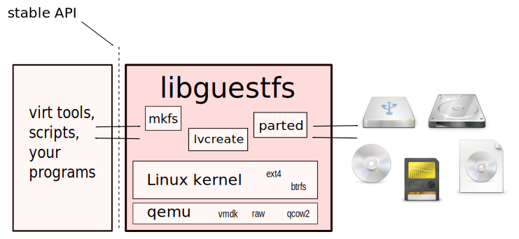

Reuse qemu, Linux kernel and userspace tools to read and write disk images.
/* get the Linux VFS type corresponding to a mounted device */ extern char *guestfs_vfs_type (guestfs_h *g, const char *device);
| Example using this API: |
#include <guestfs.h>
char *fstype = guestfs_vfs_type (g, "/dev/vda1");
printf ("%s\n", fstype);
free (fstype);
→ ntfs
|
("vfs_type",
(RString "fstype",
[Device "device"], []),
198, [],
[ (* tests *) ],
"get the Linux VFS type corresponding to a mounted device",
"\
This command gets the filesystem type corresponding to
the filesystem on C<device>.
For most filesystems, the result is the name of the Linux
VFS module which would be used to mount this filesystem
if you mounted it without specifying the filesystem type.
For example a string such as C<ext3> or C<ntfs>.");
|
char *
do_vfs_type (const char *device)
{
return get_blkid_tag (device, "TYPE");
}
static char *
get_blkid_tag (const char *device, const char *tag)
{
char *out, *err;
int r;
r = commandr (&out, &err,
"blkid",
"-c", "/dev/null",
"-o", "value", "-s", tag, device, NULL);
if (r != 0 && r != 2) {
if (r >= 0)
reply_with_error ("%s: %s (blkid returned %d)",
device, err, r);
else
reply_with_error ("%s: %s", device, err);
free (out);
free (err);
return NULL;
}
/* ... */
return out; /* caller frees */
}
|
Just these two fragments generate:
guestfish -N fs -m /dev/sda1 <<EOF mkdir /etc upload /etc/resolv.conf /etc/resolv.conf write /etc/hostname "test01.redhat.com" EOF |
virt-df -a /dev/vg/F15x32 -h Filesystem Size Used Available Use% F15x32:/dev/sda1 484M 31M 428M 7% F15x32:/dev/vg_f15x32/lv_root 5.5G 3.4G 1.8G 63% |
virt-edit -c qemu:///system -d F15x32 /etc/passwd (launches editor) |
virt-win-reg -c qemu:///system --unsafe-printable-strings \ Win7x32 'HKLM\SYSTEM\ControlSet001\Services\Tcpip\Parameters' \ | grep DhcpIPAddress "DhcpIPAddress"=str(1):"192.168.122.178" |
libguestfs.org is the main website.
guestfs(3) is the manual page documenting the C API and the internals.
There are manual pages documenting guestfish, guestmount and each virt tool. See the main website or your local man command.
This page © 2011 Red Hat Inc. and distributed under the terms of the GNU General Public License as published by the Free Software Foundation; either version 2 of the License, or (at your option) any later version.